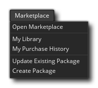

Además de crear sus propios recursos y códigos para sus proyectos, también tiene acceso al GameMaker Studio 2 Marketplace, donde puede descargar activos gratuitos y pagos para agregarlos a sus proyectos. Puede obtener más información sobre Marketplace en la sección de GameMaker Marketplace, y las opciones de este menú se detallan a continuación:
- Ir al mercado: abra la ventana del mercado donde puede buscar activos.
- Mi biblioteca: vea su biblioteca de contenido de Marketplace actual.
- Mi historial de compras: esta opción abrirá un navegador y lo llevará a la página de la cuenta del usuario que inició sesión para que pueda ver el historial de compras de esa cuenta.
- Actualizar paquete existente: esta opción abrirá el Asistente para actualizar paquete para que pueda actualizar un paquete de Marketplace existente que haya creado previamente.
- Crear paquete: con esta opción, puede abrir el Asistente para crear paquetes para crear un nuevo paquete de activos o tutorial para Marketplace.